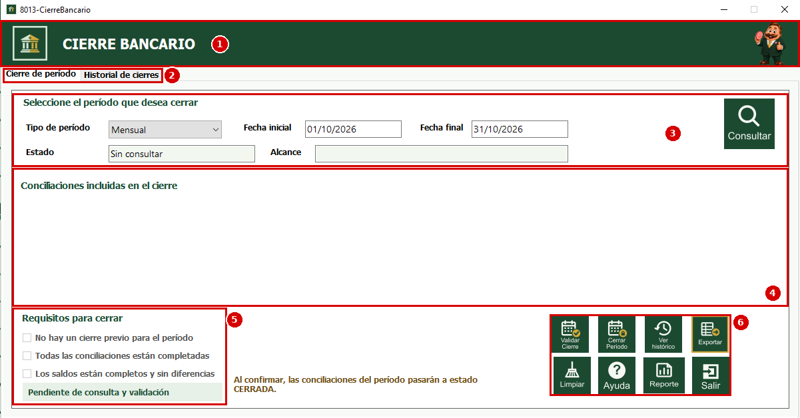
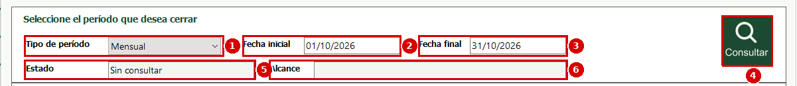
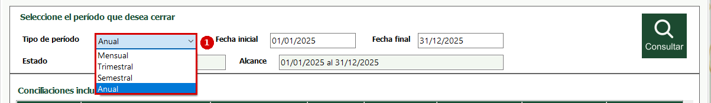
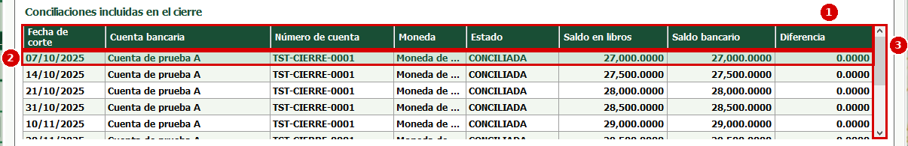
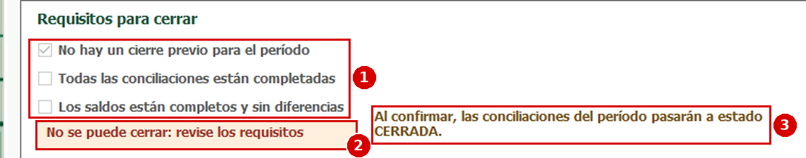
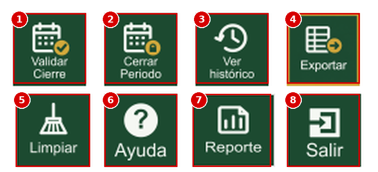
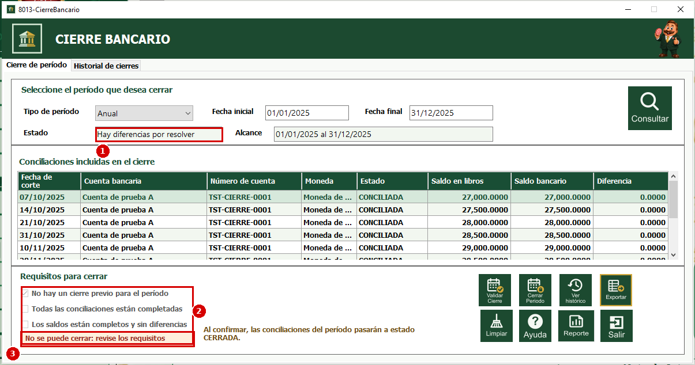
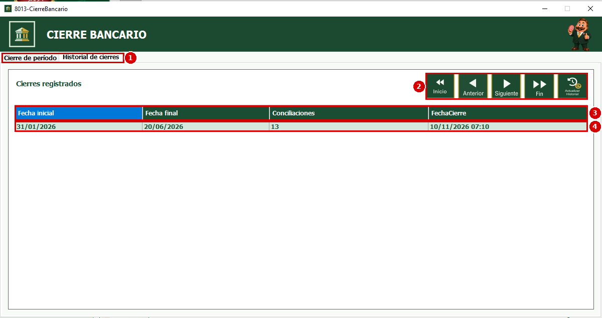
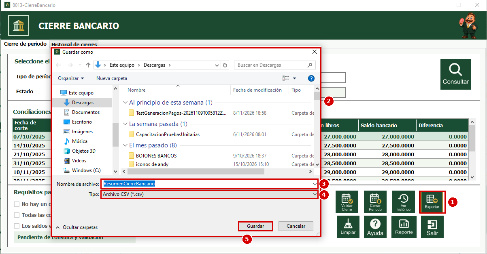

Esta es la ventana del proceso de Cierre Bancario del módulo de Bancos. Sirve para cerrar un período (un mes, un trimestre, un semestre o un año): al cerrarlo, todas las conciliaciones bancarias de ese período pasan al estado CERRADA y ya no pueden volver a cerrarse. Cada cierre queda guardado en un historial que se puede consultar, exportar o imprimir en un reporte. En las imágenes de esta ayuda, los números rojos indican el orden en que se explica cada elemento.
1. En el menú del MDI de Bancos busque la sección "Procesos".
2. Seleccione la opción "Cierre Bancario". Se abrirá la ventana "8013 – CierreBancario".
Si no ve la opción, solicite al administrador del sistema que le asigne el permiso para este proceso.
1. Encabezado; muestra el nombre del proceso, "Cierre Bancario".
2. Pestañas; la ventana tiene dos pestañas: "Cierre de período", donde se consulta, valida y cierra un período, e "Historial de cierres", donde se ven los cierres que ya se hicieron.
3. Datos del período; aquí se elige el tipo de período, las fechas y se presiona "Consultar".
4. Conciliaciones incluidas en el cierre; es la tabla con las conciliaciones que entran en el período consultado.
5. Requisitos para cerrar; muestra si el período cumple las condiciones para poder cerrarse.
6. Botones; son las acciones del proceso (validar, cerrar, ver el historial, exportar, limpiar, ayuda, reporte y salir).

1. Tipo de período; es la lista donde se elige cada cuánto se hace el cierre.
2. Fecha inicial; primer día del período, con el formato dd/MM/aaaa (por ejemplo 01/10/2026).
3. Fecha final; último día del período, con el mismo formato (por ejemplo 31/10/2026). Puede escribir las fechas a mano si necesita un rango distinto.
4. Consultar; busca las conciliaciones que están dentro de las fechas indicadas y las muestra en la tabla.
5. Estado; es un campo que no se escribe. Indica en qué situación está el período consultado (ver "Estados del período").
6. Alcance; es un campo que no se escribe. Muestra el rango de fechas que se consultó, por ejemplo "01/01/2025 al 31/12/2025".

1. Despliegue la lista "Tipo de período" y elija una opción: "Mensual", "Trimestral", "Semestral" o "Anual". Al elegirla, las fechas se llenan solas con el último período completo que ya terminó. Por ejemplo, si hoy fuera noviembre de 2026, "Mensual" propone del 01/10/2026 al 31/10/2026 y "Anual" propone del 01/01/2025 al 31/12/2025 si se está en 2026.
Si cambia el tipo de período, la tabla, los requisitos y el estado se reinician y debe volver a presionar "Consultar".

1. Elija el tipo de período y revise las fechas.
2. Presione el botón "Consultar". La tabla se llena con las conciliaciones del período, el campo "Estado" indica su situación y el campo "Alcance" muestra el rango consultado.
Si una fecha está mal escrita, el sistema muestra el mensaje "Ingrese ambas fechas con el formato dd/MM/aaaa". Si la fecha inicial es posterior a la final, muestra "La fecha inicial debe ser anterior o igual a la fecha final". Si en esas fechas no hay conciliaciones, muestra "No hay conciliaciones registradas en el período seleccionado" y el estado queda en "Sin conciliaciones".
1. Encabezado de la tabla; tiene estas columnas: "Fecha de corte" es la fecha de la conciliación; "Cuenta bancaria" es el nombre de la cuenta; "Número de cuenta" es el número de la cuenta; "Moneda" es la moneda de la cuenta; "Estado" es el estado de la conciliación (CONCILIADA, CON_DIFERENCIAS, CERRADA, etc.); "Saldo en libros" es el saldo según los registros de la empresa; "Saldo bancario" es el saldo según el banco y "Diferencia" es la resta entre ambos.
2. Filas; cada fila es una conciliación. La fila resaltada es la que está seleccionada.
3. Barra de desplazamiento; permite bajar para ver todas las conciliaciones cuando son más de las que caben en pantalla.

El campo "Estado" puede mostrar:
- "Sin consultar"; todavía no se ha presionado "Consultar".
- "Sin conciliaciones"; no hay conciliaciones en las fechas indicadas.
- "Cierre previo detectado"; alguna conciliación del rango ya está CERRADA, por lo que ese período no se puede cerrar de nuevo.
- "Hay diferencias por resolver"; alguna conciliación tiene el estado CON_DIFERENCIAS.
- "Hay conciliaciones pendientes"; alguna conciliación todavía no está completada.
- "Conciliaciones listas para validar"; todas las conciliaciones están completadas y se puede presionar "Validar Cierre".
- "Error de consulta"; ocurrió un problema al consultar. El sistema muestra un mensaje con el detalle.
1. Casillas de requisitos; son tres y se marcan al presionar "Validar Cierre". Para poder cerrar el período las tres deben estar marcadas:
a. "No hay un cierre previo para el período"; ninguna conciliación del rango está CERRADA.
b. "Todas las conciliaciones están completadas"; todas las conciliaciones del rango están en estado CONCILIADA.
c. "Los saldos están completos y sin diferencias"; todas las conciliaciones tienen saldo en libros y saldo bancario, y la diferencia es 0.
Las casillas no se marcan a mano; solo el sistema las marca.
2. Resultado de la validación; es el recuadro de abajo. Al principio dice "Pendiente de consulta y validación". Después de validar dice "Validación aprobada. El período puede cerrarse." (en verde) o "No se puede cerrar: revise los requisitos pendientes." (en anaranjado).
3. Aviso; recuerda que al confirmar el cierre las conciliaciones del período pasarán a estado CERRADA.

1. Validar Cierre; revisa los tres requisitos del período consultado.
2. Cerrar Período; cierra el período. Está deshabilitado hasta que la validación sea aprobada.
3. Ver histórico; abre la pestaña "Historial de cierres" con los cierres ya realizados.
4. Exportar; guarda en un archivo CSV la tabla que se está viendo.
5. Limpiar; deja la ventana como al inicio: vuelve a llenar las fechas según el tipo de período, vacía la tabla y desmarca los requisitos. No modifica ninguna conciliación.
6. Ayuda; ayuda rápida de la ventana.
7. Reporte; abre el reporte del historial de cierres bancarios.
8. Salir; cierra la ventana de Cierre Bancario.

1. Después de consultar el período, presione "Validar Cierre". Si todavía no consultó, el sistema muestra "Consulte un período con conciliaciones antes de validar".
2. El sistema marca las casillas de los requisitos que se cumplen y muestra el resultado de la validación.
3. Si los tres requisitos se cumplen, el botón "Cerrar Período" se habilita. Si falta alguno, queda deshabilitado; corrija lo que falta (por ejemplo, complete la conciliación pendiente o resuelva la diferencia en el proceso de Conciliación), vuelva a presionar "Consultar" y luego "Validar Cierre".
En el ejemplo de la imagen, el período anual tiene conciliaciones con diferencias por resolver: solo se marcó "No hay un cierre previo para el período", las otras dos casillas quedaron sin marcar y el sistema muestra "No se puede cerrar: revise los requisitos".

1. Con la validación aprobada, presione "Cerrar Período".
2. El sistema pregunta "¿Confirma el cierre de las conciliaciones entre [fecha inicial] y [fecha final]?" y aclara que las conciliaciones pasarán a estado CERRADA y no podrán volver a cerrarse. Presione "Sí" para confirmar o "No" para cancelar.
3. Si confirma, aparece el mensaje "El período se cerró correctamente". Al presionar "Aceptar", el sistema abre la pestaña "Historial de cierres" donde ya aparece el nuevo cierre.
Si ocurre algún problema, el sistema muestra el mensaje "No se completó el cierre" con el motivo y vuelve a consultar el período.
Importante: un cierre no se puede deshacer desde esta ventana. Revise bien el período antes de confirmar.
Esta pestaña se abre al presionar "Ver histórico" o al terminar un cierre. Si todavía no hay cierres registrados muestra el mensaje "Todavía no hay cierres registrados".
1. Pestañas; para regresar a la consulta presione la pestaña "Cierre de período".
2. Botones de navegación; "Inicio" se posiciona en el primer cierre de la tabla; "Anterior" retrocede un cierre; "Siguiente" avanza un cierre; "Fin" se posiciona en el último cierre y "Actualizar Historial" vuelve a cargar la tabla con los datos más recientes. Los botones se deshabilitan cuando no hay más cierres hacia ese lado.
3. Encabezado de la tabla; tiene estas columnas: "Fecha inicial" y "Fecha final" son los límites del período cerrado; "Conciliaciones" es la cantidad de conciliaciones que se cerraron y "FechaCierre" es el día y la hora en que se hizo el cierre.
4. Filas; cada fila es un cierre realizado. La fila resaltada es la seleccionada.

1. Presione el botón "Exportar". Se exporta la tabla de la pestaña que esté viendo: el resumen de conciliaciones en "Cierre de período" o el historial en "Historial de cierres". Si la tabla está vacía, el sistema muestra "No hay información para exportar".
2. Se abre la ventana "Guardar como". Elija la carpeta donde quiere guardar el archivo (por ejemplo Descargas).
3. Nombre de archivo; el sistema propone "ResumenCierreBancario" (o "HistorialCierresBancarios" si está en el historial). Puede cambiarlo.
4. Tipo; el archivo se guarda en formato CSV, que se puede abrir con Excel.
5. Presione "Guardar" para crear el archivo o "Cancelar" para salir sin guardar.

1. Presione el botón "Reporte". Se abre la ventana "8013 – FrmReporteCierreBancario" con el listado de los cierres realizados: número de cierre, fecha inicial, fecha final, conciliaciones cerradas y fecha de cierre.
2. Desde la barra del reporte puede cambiar de página, hacer zoom, imprimir y guardar el reporte como archivo (por ejemplo PDF, Word o Excel).
1. Presione "Limpiar" si desea empezar de nuevo. La tabla se vacía, las casillas de requisitos se desmarcan, el estado vuelve a "Sin consultar" y las fechas se llenan otra vez según el tipo de período elegido. Este botón no cierra ni modifica ninguna conciliación.
1. Presione "Ayuda" para ver un resumen de los pasos del cierre: elegir el período, consultar, validar y confirmar el cierre.
1. Presione "Salir" para cerrar la ventana de Cierre Bancario. Los cierres ya confirmados quedan guardados; lo que solo estaba consultado en pantalla no se guarda.